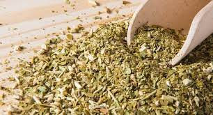

Yerba Mate Tradicional
Esta es la yerba mate clásica, elaborada con hojas de yerba mate secas y trituradas. Es la variedad más pura y ofrece un sabor auténtico y fuerte.

Las hojas de yerba mate se recolectan, secan y se trituran para producir la yerba mate que se utiliza para preparar la bebida. La yerba mate contiene cafeína, teobromina y otros compuestos bioactivos, lo que le confiere propiedades estimulantes y antioxidantes.
Esta es la yerba mate clásica, elaborada con hojas de yerba mate secas y trituradas. Es la variedad más pura y ofrece un sabor auténtico y fuerte.
Esta variante se somete a un proceso de secado más corto, lo que resulta en un sabor más suave y menos amargo. Es ideal para aquellos que están comenzando a beber mate y prefieren un sabor menos intenso.
En este tipo, las hojas se despalan, es decir, se eliminan las venas y tallos, lo que resulta en un sabor más suave y menos amargo.
La yerba mate puede variar en la proporción de hojas y palos (tallo de la planta). Las yerbas con más palos suelen ser más suaves, mientras que las yerbas con más hojas tienen un sabor más fuerte y amargo.
Diferentes regiones de América del Sur producen yerbas mate con perfiles de sabor únicos debido a las diferencias en el suelo y el clima.
Algunas yerbas mate se mezclan con hierbas, especias o frutas para agregar sabores adicionales. Estas combinaciones ofrecen una experiencia de sabor única.